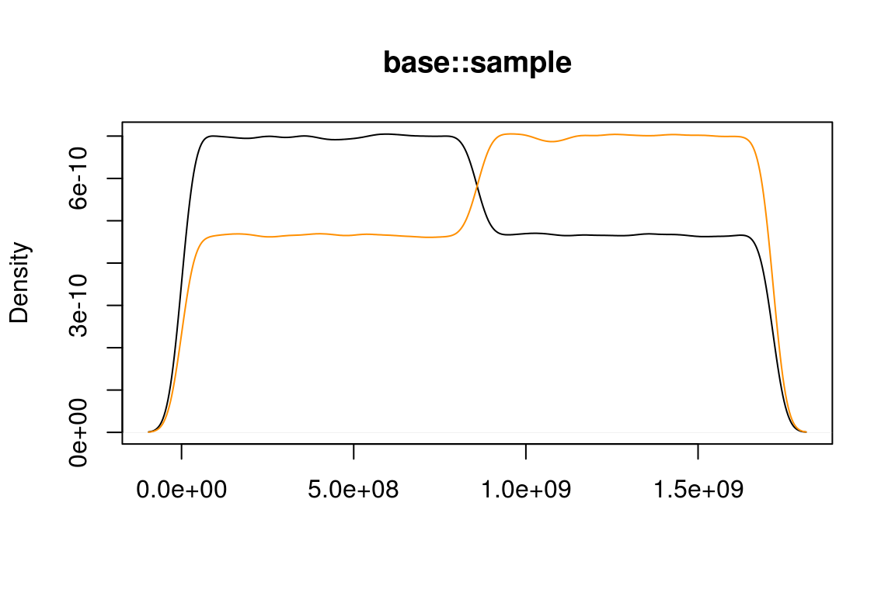
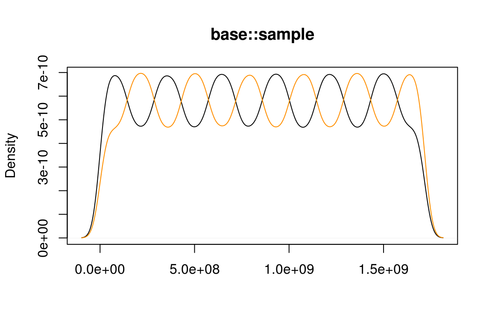
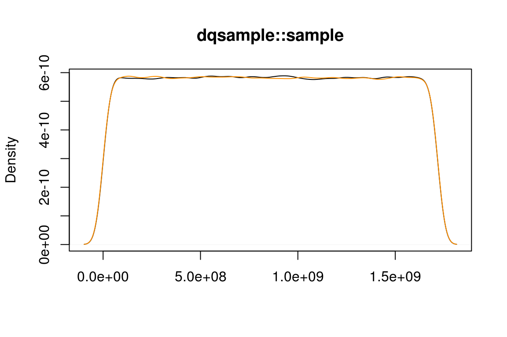

vignettes/dqsample.Rmd
dqsample.RmdFor many tasks in statistics and data science it is useful to create a random sample or permutation of a data set. Within R the function base::sample() is used for this task. Unfortunately this function uses a slightly biased algorithm for creating random integers within a given range. Most recently this issue has been discussed in a thread on R-devel, which is also the motivation of the dqsample package.
When sampling many random integers the density of odd and even numbers should be roughly equal and constant. However, this is not the case with base::sample:
m <- 2/5 * 2^32
x <- base::sample(floor(m), 1000000, replace = TRUE)
plot(density(x[x %% 2 == 0]), main = "base::sample", xlab = NA)
lines(density(x[x %% 2 == 1]), col = "#FF8F00")
Or with slightly different parameters:
x <- base::sample(floor(m - 2), 1000000, replace = TRUE)
plot(density(x[x %% 2 == 0]), main = "base::sample", xlab = NA)
lines(density(x[x %% 2 == 1]), col = "#FF8F00")
This particular example for the bias was found by Duncan Murdoch.
In dqsample the algorithm suggested by Daniel Lemire (2018, <arXiv:1805.1094>) is used. With this algorithm there is no observable bias between odd and even numbers:
m <- 2/5 * 2^32
x <- dqsample::sample(floor(m), 1000000, replace = TRUE)
plot(density(x[x %% 2 == 0]), main = "dqsample::sample", xlab = NA)
lines(density(x[x %% 2 == 1]), col = "#FF8F00")
Internally the base::sample() function needs uniformly distributed random integers in an half-open range [0, n). In order to do so, R uses random floating point numbers that are uniformly distributed in [0, 1), multiplies by n and truncates the result to the next smaller integer. This method would be fine, if the random numbers used as starting point would be real numbers in the mathematical sense. However, this is not the case here.
The default random-number generator in R is a 32 bit version of the Mersenne-Twister. It produces random integers uniformly distributed in [0, 2^32), which are then divided by 2^32 to produce doubles in [0, 1). We can now invert the procedure described above to see how many integers are mapped to a certain result. For example, we could simulate rolling ten dice using sample(6, 10, replace = TRUE). Since 2^32 is not a multiple of six, the distribution cannot be completely even:
possible_integers <- function(n, limit = n) {
result <- diff(floor(2^32 * seq.int(from = 0, to = limit) / n))
names(result) <- seq.int(to = limit)
result
}
possible_integers(6)
#> 1 2 3 4 5 6
#> 715827882 715827883 715827883 715827882 715827883 715827883We see that both one and four are very slightly less likely than the other numbers. This effect gets much more pronounced as the number of items increases from which one can choose. For example, we can use the m from above to see how that uneven distribution of odd and even numbers came about:
possible_integers(floor(m), limit = 20)
#> 1 2 3 4 5 6 7 8 9 10 11 12 13 14 15 16 17 18 19 20
#> 2 3 2 3 2 3 2 3 2 3 2 3 2 3 2 3 2 3 2 3Here we see that while only two integers map to any odd number, there are three integers mapped to the even numbers. This pattern shifts half way through the possible results, making the odd numbers more likely, leading to the first image displayed above. As one goes away from m, these pattern shifts occur more rapidly, leading to the oscillatory behaviour seen in the second image. As one moves further away from m, these oscillations happen so rapidly, that a density plot of odd and even numbers looks constant, but the bias is still there. For example, for m - 2^20 one such pattern shift happens between 982 and 983:
tail(possible_integers(floor(m - 2^20), limit = 992), n = 20)
#> 973 974 975 976 977 978 979 980 981 982 983 984 985 986 987 988 989 990
#> 2 3 2 3 2 3 2 3 2 3 3 2 3 2 3 2 3 2
#> 991 992
#> 3 2Below this point, even numbers are more likely than odd numbers. After this point, the pattern is reversed.
The algorithm used by base::sample() is biased with non-negligible effects when sampling from large data sets. The dqsample package provides an unbiased algorithm for the most common cases. It can be used as a drop-in replacement for the functionality provided by base::sample().